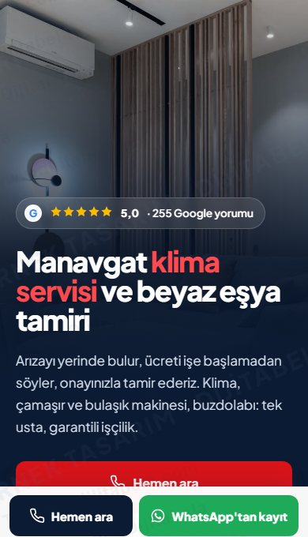
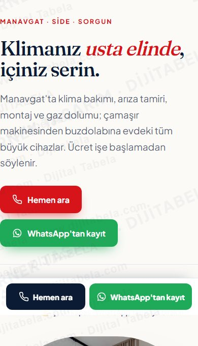
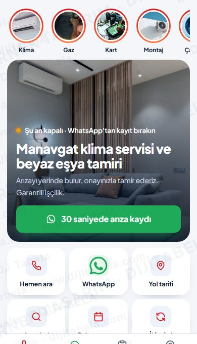

Google'daki gerçek bilgileriniz (5,0 ★, 255 yorum) ve servisinize özel çalışan araçlarla hazırladık. Üçü de aynı içerik, üç ayrı yerleşim. Telefonda açıp deneyin; beğendiğinizi söyleyin, kendi alan adınızla yayına alalım.

ÖnerimizGüçlü fotoğraflı giriş, hızlı kayıt kartı, görselli hizmet kartları, 4 adımlı süreç. En kapsamlı ve en çok satış getiren yerleşim.
Aç ve dene
Zarif serif başlıklar, kemerli fotoğraf, dönüşümlü hizmet anlatımı, büyük müşteri alıntıları.
Aç ve dene
Telefon uygulaması gibi: hikâye halkaları, sekmeler, alt menü. Tek elle 30 saniyede kayıt.
Aç ve deneÖrnek tasarımdır, yayında değildir. Formlar demo olarak WhatsApp'a ön dolu mesaj açar. Fotoğraflar: Pexels (ticari kullanım serbest) ve işletmenin kendi fotoğrafları. Dijitabela · 0501 945 21 84 · dijitabela.com